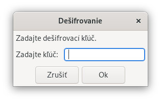

Spustenie Password Safe bez argumentov spôsobí, že vás aplikácia vyzve na zadanie hlavného hesla
poslednej otvorenej databázy alebo hlavného hesla novej databázy, ak predtým na vašom počítači nebola žiadna otvorená (napr. pri prvom použití).
Toto je však možné zmeniť spustením Password Safe takto:
pwsafedatabáza
Týmto sa otvorí zadaný súbor databázy namiesto posledného otvoreného súboru. Ak je zadaný iba názov súboru bez cesty,
bude sa vyhľadávať v adresári, v ktorom bola aplikácia spustená. Upozorňujeme, že ak názov súboru a/alebo cesta obsahuje medzery, mal by byť uzavretý v dvojitých úvodzovkách.
pwsafe-r [databáza]
Týmto sa otvorí zadaná databáza v režime iba na čítanie. Ak databáza nie je zadaná, aplikácia vyzve používateľa na zadanie databázy, ktorá sa otvorí v režime iba na čítanie.
pwsafe-e názov súboru
Týmto sa používateľ vyzve na zadanie šifrovacieho kľúča (hesla) a súbor sa zašifruje.
Poznámka: Súbor môže byť ľubovoľný súbor. Zašifrovaný súbor bude mať rovnaký názov ako pôvodný súbor s pripojenou príponou ".PSF".
pwsafe-d názov súboru
Táto funkcia vyzve používateľa na zadanie šifrovacieho kľúča (hesla) a súbor sa dešifruje.
Poznámka: Toto bude fungovať iba na súboroch .PSF, ktoré boli zašifrované programom Password Safe s prepínačom "-e" (pozri vyššie).

pwsafe-c
Týmto sa aplikácia spustí zatvorená, teda bez databázy a bez úvodného otváracieho dialógového okna
(Na prístup k databáze použite menu Súbor).
pwsafe-s [databáza]
Týmto sa aplikácia spustí v "tichosti", teda minimalizovaná, bez databázy (pokiaľ nie je zadaná).
Po obnovení aplikácie sa používateľovi zobrazí otváracie dialógové okno
(táto možnosť je určená na spustenie aplikácie po prihlásení prostredníctvom odkazu v priečinku Po spustení používateľa).
Poznámka: Toto správanie implicitne umiestni aplikáciu do systémovej lišty (system tray).
pwsafe-m
Toto je rovnaké ako možnosť '-c' s tým rozdielom, že aplikácia sa spustí minimalizovaná.
Okrem toho sú akceptované nasledujúce možnosti, ktoré môžu byť užitočné, ak chcete
zdieľať rovnaké nastavenia na viacerých počítačoch, napríklad pri spustení aplikácie z disku na kľúči.
-umeno_pouzivatela
Toto spôsobí, že aplikácia bude čítať a zapisovať nastavenia pod zadaným
meno_pouzivatela namiesto aktuálneho prihlasovacieho mena.
-hnazov_pocitaca
Toto spôsobí, že aplikácia bude čítať a zapisovať nastavenia pod zadaným
nazov_pocitaca namiesto aktuálneho názvu počítača.
-gkonfiguračný_súbor
Toto spôsobí, že na načítanie a ukladanie nastavení sa použije zadaný súbor,
namiesto predvoleného súboru pwsafe.cfg. Ak je zadaný iba názov súboru bez cesty,
bude sa vyhľadávať v adresári v ktorom bola aplikácia spustená,
pokiaľ nie je prepísaná premennou prostredia PWS_PREFSDIR
(pozri jej popis v téme Predvoľby).
Upozorňujeme, že ak názov súboru a/alebo cesta obsahuje medzery, mal by byť uzavretý v dvojitých úvodzovkách.
Poznámka: Keďže konfiguračný súbor používa XML, meno_pouzivatela a nazov_pocitaca musia spĺňať štandardy XML:
Prvý znak musí byť alfanumerický. Ak nie, pred používateľským menom sa pridá "u"
a pred názvom počítača sa podľa potreby pridá "h".
Musia obsahovať iba alfanumerické znaky alebo jeden alebo viacero znakov podčiarkovníka, spojovníka,
dvojbodky alebo bodky ("_-:."). Ak sú prítomné iné znaky, budú nahradené podčiarkovníkom ("_").